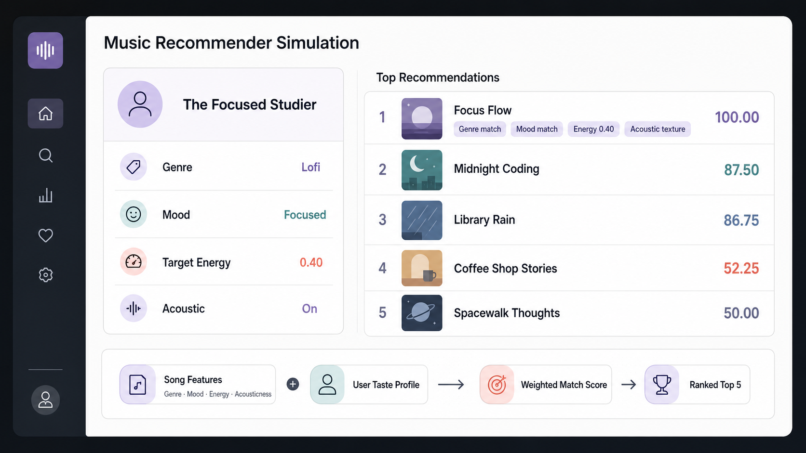

TuneMatch 1.0: An Explainable Content-Based Music Recommender
Streaming recommenders like Spotify keep their ranking logic invisible, so a listener can’t tell why a song was picked or what the system gets wrong. TuneMatch makes every step visible: the scoring rule is designed by hand, each recommendation comes with a plain-language explanation, and a model card names the biases the weighting creates.

Project Overview
Genre is worth 35 points, mood up to 30, energy closeness up to 25, and acoustic texture moves the total by ±10 — a deliberate claim that taste labels should outrank a perfect numerical fit.
For the “Focused Studier” profile, Focus Flow matches every signal and scores 100.00. The next three are lofi tracks whose moods are near focused, landing at 86–88 on partial mood credit.
What I Built
TuneMatch is a content-based recommender written in plain Python for CodePath’s AI Engineering course (AI 110). Each of the 18 songs in the catalog carries ten fields, including genre, mood, energy, tempo, valence, danceability and acousticness, loaded from CSV and converted to numbers at the boundary. A UserProfile dataclass holds four fields: favorite genre, favorite mood, target energy, and whether the listener likes acoustic. The scoring function compares every song against the profile, sorts the catalog, and returns the top k (five by default), each with a sentence naming the signals that earned its score. I built it with an AI coding assistant, which drafted and refactored the scoring function and generated adversarial profiles to probe the weights, while the modeling decisions stayed mine. A pytest suite covers the loader and the scoring, and the full run is one python -m src.main against a checked-in catalog.
Design Decisions
I designed the scoring rule by hand instead of fitting it, so the model is a baseline I can defend line by line and its priorities are in plain sight. Genre is the anchor at 35 points, with mood up to 30, energy closeness up to 25 and acoustic texture as a ±10 adjustment, because I judged that a slightly-too-energetic lofi track is a better pick than a perfectly paced track from a genre the listener avoids. I also gave related moods partial credit, so chill and relaxed still score against a focused profile and near-misses surface ahead of songs that genuinely don’t fit.
The Result
For the “Focused Studier” profile, Focus Flow matches every signal and scores 100.00, and the next three lofi tracks land at 86–88 on partial mood credit. Every ranking can be traced through its explanation, the sample output in the docs is reproducible from one command, and the model card records the failure modes the weighting creates.
Key Features
Weighted multi-signal scoring across genre, mood, energy and acoustic texture; mood adjacency that gives related moods partial credit; a plain-language explanation with every result; profile-driven simulation where swapping the four-field UserProfile reruns the catalog for a new listener; a model card that documents failure modes; and a pytest suite with a one-command, reproducible run.